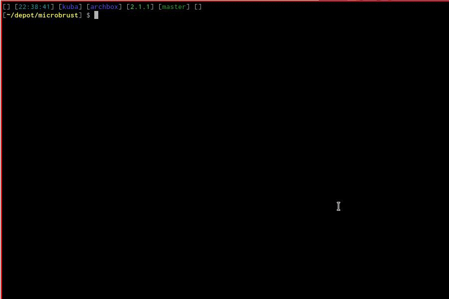

Microbrust: A Linux interface to Arturia Microbrute

Intrudoction
Microbrust is a Linux interface to Arturia Microbrute written in Rust.
Disclaimer
I implemented this as a first project when learning Rust, so probably the code quiality is awful. Hopefully, it will look better in the future.
Usage
Clone and run cargo run in the project's directory. The UI is pretty
self-explanatory. Use Escape to exit.
Requirements
Requires Rust, Cargo and ALSA to compile.
Quirks
The Microbrute has to be connected BEFORE running Microbrust. No auto- or re-connecting right now. Microbrust will fail if you disconnect Microbrute in the meantime. Sorry... but there is a chance I will fix this in the future.
Questions and issues
Use Github's issue tracker for bug or feature requests. Drop me a line if you want to ask about anything that is not a bug/feature request.
License
You can check out the full license here This project is licensed under the terms of the GNU GPLv3.0 license.